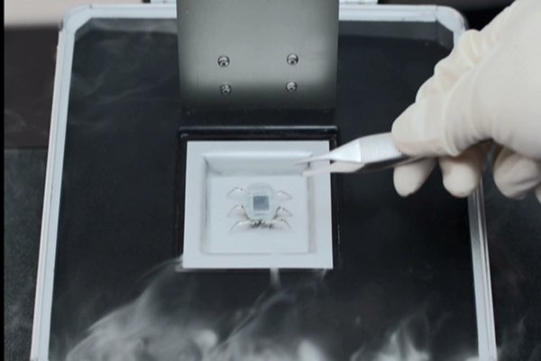
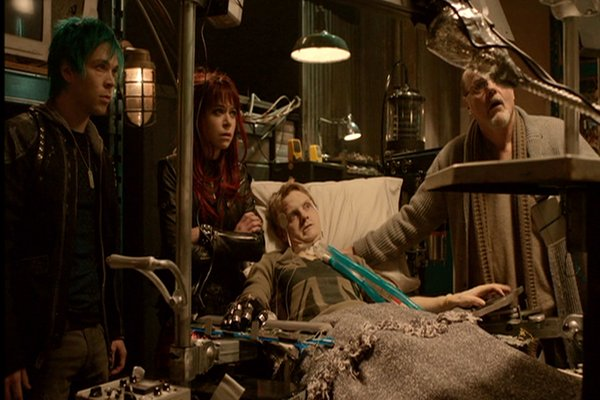

Movie review by : Mr. Roboto
Year : 2009
Directed by : Ernie Barbarash
Written by : Michael Hurst
Degree of Cyberpunk visuals : Medium
Correlation to Cyberpunk themes : High
Rating : 4/10
Key cast members :

Just a few years from now, corporations control and observe everything.
The Story: Luke Gibson (Gooding) and his pregnant wife get involved in a car accident. She dies on the scene, and he is hospitalized with brain damage (amnesia) and no insurance. The Hope Corporation finances his brain operation, which involves a Psi-Comp implant on his visual lobe. He soon starts having hallucinations, which are commercials that only he can see and hear. But hackers manage to tap into the implant and give him messages which lead him to Keyboard, a former Hope employee turned hacker, who has information that can stop The Hope Corporation's plans for the implants.

Cyberpunk themes... they got 'em. There's little question about this being cyberpunk; It's practically dripping with cy-punk themes throughout. The Psi-Comp implants can be used to control people, either with persistent commercials or a painful "fail-safe" that can blow your head off, depending on how Hope Co. feels about your finding out about the truth about them. The hackers try to free Luke from Hope's control over him by using the implant themselves. Hope Co's. cameras everywhere watching most everything that goes on. There's even holographic projections of corporate brands above and on cityscapes and landmarks, owing to how corporations had bail out governments due to their failed bailouts. About the only thing missing would be the dystopic atmosphere, though through sound bytes from televisions indicate that the dystopia is financial.
So what could (or did) possibly go wrong? With Hardwired's abundance of cy-punk themes, it might be hard to imagine that this could not be the next Blade Runner. That might be the big problem: It's trying to be the next Blade Runner. Not that aspiring to be such a classic is a bad thing, it's just most cyberpunk movies lately are trying to be Blade Runner, and they try so hard that they ultimately fail to be even a good movie. Let's try to make a good movie first, then you can try being Blade Runner. Best way to start is to actually do something with those themes. It's obvious the makers seem to know about what cyberpunk is, but it's also obvious they don't know what to do with it all. Maybe they should hang out here for a while...

Are you certain that the one on the left is Punk Blue and not Punk Green?
Another problem is more "technical", the operation scene when Luke gets the implant. Inside the operating room, Luke is sitting upright, but a scene through a security cam (assumed to be in the same O.R.) shows him lying down, face up, even though the doctor just finished drilling into the back of Luke's neck. It's not like every movie is one-hundred percent accurate, but such noticeable goofs early on can make the rest of the film less believable. Also, the hackers use the chip to send Luke information a la "augmented reality." His eyes were not replaced with holographic projectors, so we should not be able to see the transmitted data in front of his face. Seeing that stuff as Luke sees it, first-person like, would have worked better.
Conclusion: It's hard to put Hardwired down because it has a great idea, but some bad implementations may have doomed it to direct-to-video hell and lack of reviews. The only other review called it "cheesy, seriously cheesy". Plus, the ending practically begs "please let us become a franchise", though it might serve better as a pilot for some futuristic TV series. Maybe.
So much potential...
It looks like Bruce Willis now has some competition for the most WTF hairpiece.